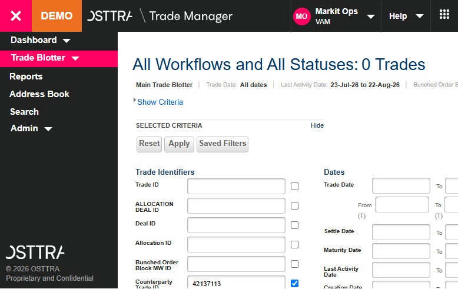
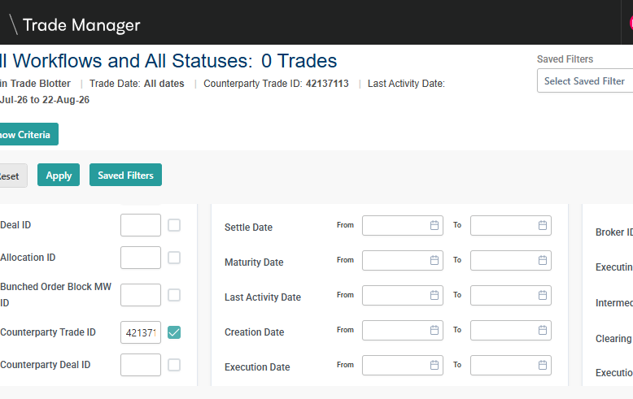
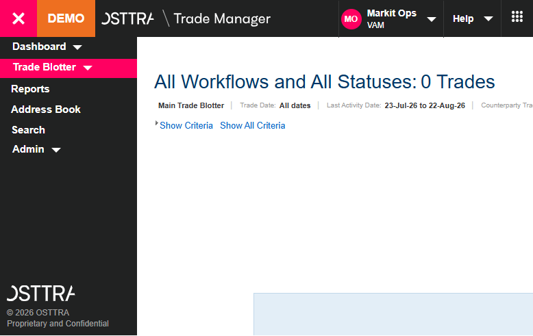
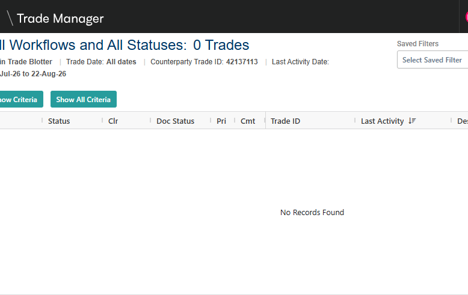

GWT Header Trade Count (Total Matched)
0
ag-Grid Summary Trade Count (Total Matched)
0
✅ Perfect Parity! Both legacy GWT and modern ag-Grid successfully loaded, reset, applied filter criteria, and scraped exactly matching transaction lists (0 rows).
Plain English BDD Specification
Scenario Outline: Exact and Contains Alphanumeric Search Parity on
Given the user has authenticated and loaded the OSTTRA Trade Blotter
And ensure all search criteria are completely reset and empty
When the user targets the criteria field ""
And inputs the search value ""
And sets the Contains checkbox matching to ""
And clicks the "Apply" filter button
Then both legacy GWT and ag-Grid must retrieve identical records
BDD Parameter Values Applied (Runtime)
FieldLabel
Counterparty Trade ID
VerifyColumn
Counterparty Trade ID
1. Visual Inputs Auditing (Entered Values)
Old UI (GWT) Input State

📸 Screenshot Bypassed (Bypass Fallback Active)
New UI (ag-Grid) Input State

📸 Screenshot Bypassed (Bypass Fallback Active)
2. Visual Results Auditing (Scraped Grid Records)
Old UI (GWT) Grid Results

📸 Screenshot Bypassed (Bypass Fallback Active)
New UI (ag-Grid) Grid Results

📸 Screenshot Bypassed (Bypass Fallback Active)
3. Grid Data Row-by-Row Parity Audit
| Field Name |
Old UI Value (GWT) |
New UI Value (ag-Grid) |
Parity |